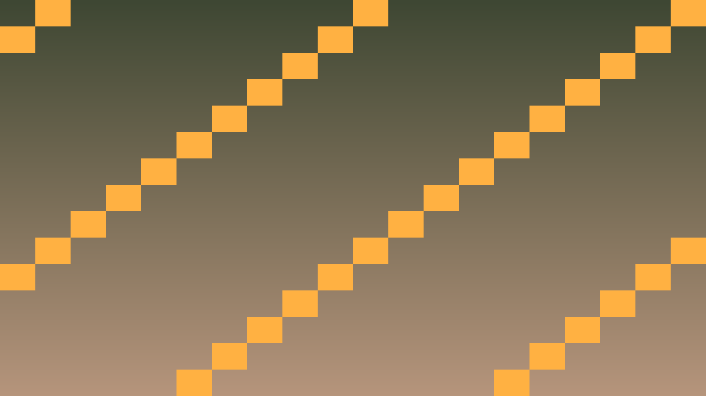

Tavs šīs stundas izaicinājums: Izveidot specializētas varoņu klases, izmantojot inheritance (mantošanu).
Mantošana ļauj bērna klasei pārmantot vecāka atribūtus un metodes, pievienojot vai pārrakstot.
class Hero { /* base klase */ };
class Knight : public Hero {
public:
int armor;
Knight(String n) : Hero(n, 150, 18, 12) { // izsauc vecāku konstruktoru
armor = 10;
}
// Pārraksta (override) vecāka metodi
void take_damage(int amount) override {
amount -= armor; // bruņas papildus aizsargā
Hero::take_damage(amount);
}
};
class Mage : public Hero {
public:
int mana;
Mage(String n) : Hero(n, 80, 25, 3), mana(100) {}
void cast_spell(Hero& target) {
if (mana >= 20) {
mana -= 20;
target.take_damage(40);
}
}
};virtual atslēgvārds ļauj izsaukt bērna metodi caur vecāka pointer (polimorfisms).
Kritiskais fokuss: šajā stundā nepietiek tikai panākt redzamu efektu editorā. Jāspēj paskaidrot, kura C++ klase glabā stāvokli, kura metode to maina un kā Godot node struktūra šo kodu izmanto.
Pārbaudes pierādījums: katrai būtiskai spēles lomai ir C++ klase ar header/implementation dalījumu, konstruktoriem, metodēm, signāliem vai mantošanu.
#include <godot_cpp/variant/string.hpp>
using namespace godot;
struct OopCheckpoint {
String lesson = "3.2 Mantošana C++ un Godot";
bool uses_cpp = true;
bool has_header_file = true;
bool has_single_responsibility = true;
bool uses_godot_registration = true;
};Izpildi šo darba plānu, lai 3.2 Mantošana C++ un Godot rezultāts būtu pārbaudāms C++ GDExtension projektā.
.hpp failu ar klases deklarāciju un privātajiem datiem..cpp failu ar konstruktoru un metožu implementāciju.GDCLASS makro un _bind_methods().const metodi, kas tikai nolasa stāvokli._bind_methods() un pieslēdz ar Callable.register_types.cpp failā.Izveido divas specializētas Hero apakšklases.
knight.hpp: class Knight : public Hero ar int armor.Knight(String n) : Hero(n, 150, 18, 12), armor(10) {}take_damage: amortē 5 punkti pirms vecāka metodes izsaukuma.cast_spell.Polimorfisma demonstrācija.
take_damage un attack_target par virtual.std::vector<Hero*> party, pievieno Knight un Mage.h->take_damage(20) — izsaucas pareizās klases versijas.Izveido vēl vienu specializāciju.
Archer : public Hero ar int agility un int arrows.shoot() metode: prasa arrows > 0, dara 2x bojājumu.dodge_chance: pārraksta take_damage — 30% iespēja izvairīties pavisam.Vairāku vecāku problēma.
Paladin : public Knight, public Mage.virtual mantošana vai izvairies.: Hero(...).
class Knight : public Hero {
private:
int armor;
public:
Knight(String n) : Hero(n, 150, 18, 12), armor(10) {}
void take_damage(int amount) override {
amount = std::max(1, amount - armor);
Hero::take_damage(amount);
}
};
class Mage : public Hero {
private:
int mana;
public:
Mage(String n) : Hero(n, 80, 25, 3), mana(100) {}
void cast_spell(Hero* target) {
if (mana >= 20) {
mana -= 20;
UtilityFunctions::print(name, " met burvojumu pret ", target->get_name());
target->take_damage(40);
}
}
};